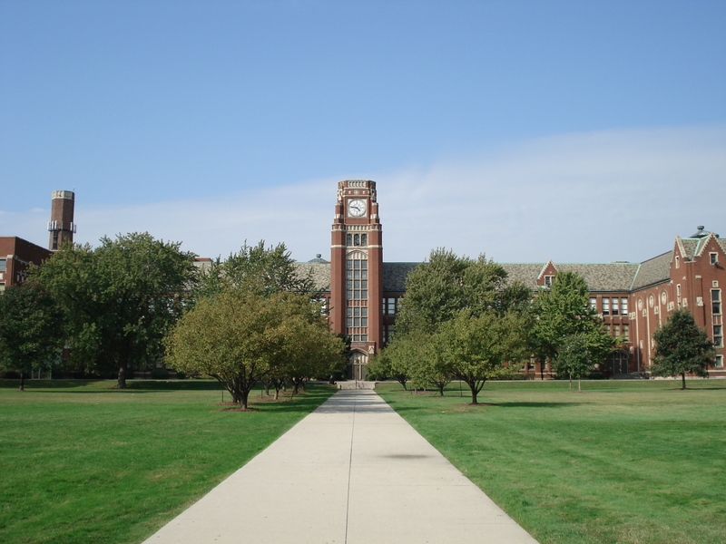

The origins of Edwin
-
April 23 2004
Edwin Colon is born at Prentice Hospital in downtown Chicago Illinois.
-
December 23 2006
Edwin Colon got the first of two baby brothers, Evan.
-
September 8th 2009
Edwin Colon starts Kingerdarden at O.A.Thorp Academy.

-
July 13th 2013
Edwin Colon recives his second baby brother, Elias.
-
March 18th 2018
Edwin recieves his acceptance letter to Lane Tech College Prep

-
April 21st 2018
Edwin Colon tears his ACL in a basektball game.
-
June 2018
Edwin Colon gets surgery on his knee and a week later, graduates from grade school.